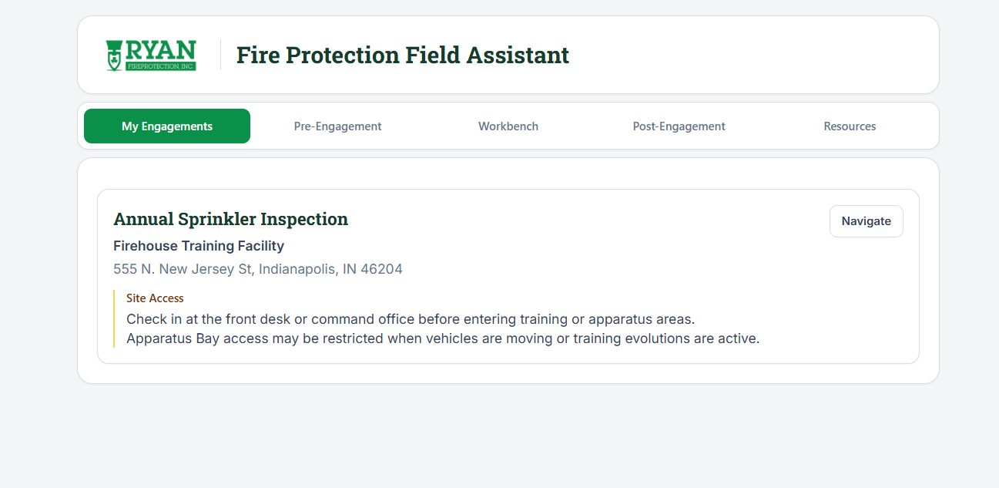
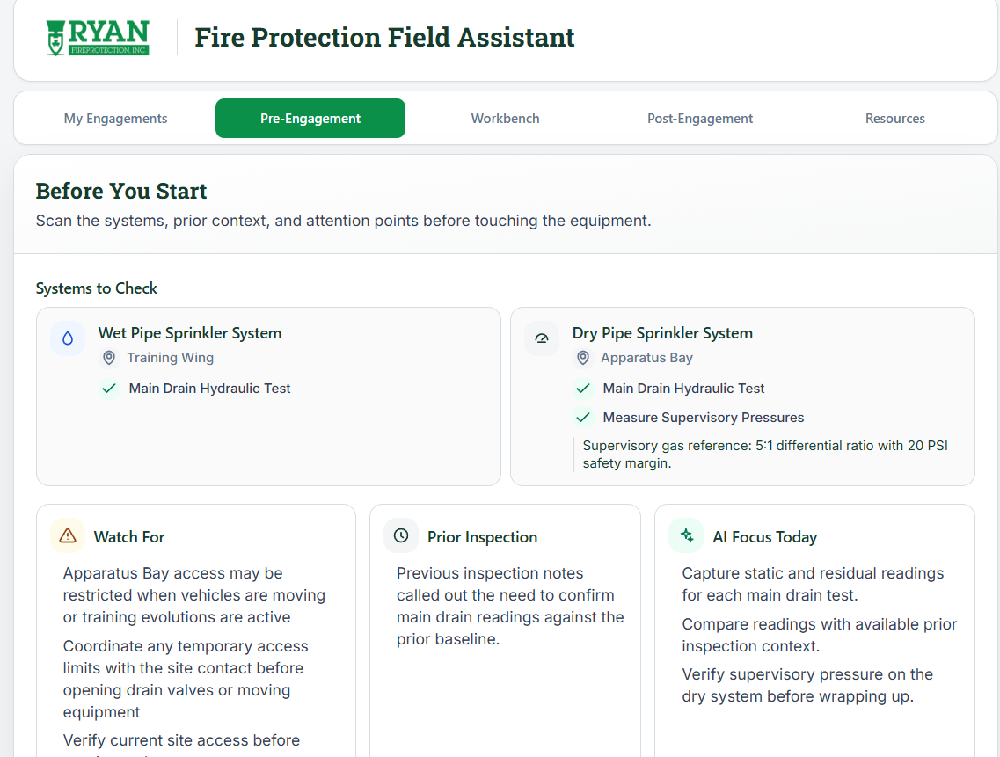
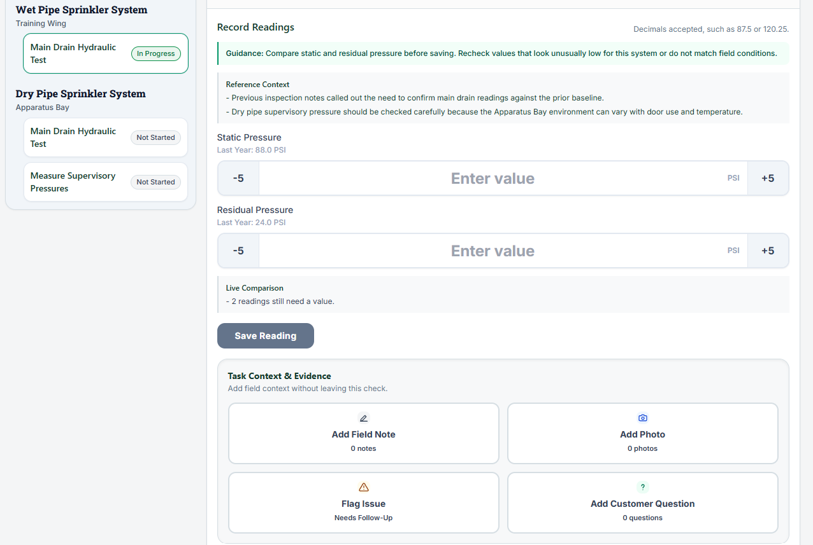

Fire Protection Field Assistant

Challenge
Field employees may need customer history, site details, previous work, inspection requirements, product knowledge, and internal resources before they can complete and document an engagement.
Approach
I organized the experience around three connected phases: Pre-Engagement, Workbench, and Post-Engagement. Each phase brings the relevant context, guidance, documentation, and follow-through into the same workflow.
Solution
- Engagement and site context
- Systems, checks, and current field activity
- Readings, notes, photos, and issues
- AI field guidance and post-engagement routing
Demonstrated value
The working prototype demonstrates how a field workflow can reduce context switching and keep preparation, execution, and documentation connected.

